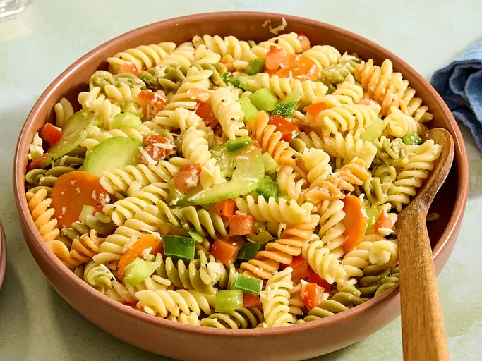

Garden Pasta Salad
Home

Ingredients
- 1 (16 ounce) package tri-color rotini pasta
- 2 large tomatoes, diced
- 2 stalks celery, chopped
- ½ cup thinly sliced carrots
- ½ cup chopped green bell pepper
- ½ cup cucumber, peeled and thinly sliced
- ¼ cup chopped onion
- 1 ½ (16 ounce) bottles Italian-style salad dressing, or to taste
- ½ cup grated Parmesan cheese
Steps
- Bring a large pot of lightly salted water to a boil; cook pasta at a boil until tender yet firm to the bite, about 8
minutes. Rinse under cold water, and drain.
- Mix tomatoes, celery, carrots, bell pepper, cucumber, and onion together in a large bowl. Add cooled pasta, salad
dressing, and Parmesan; mix until well combined. Cover and chill for 1 hour before serving.